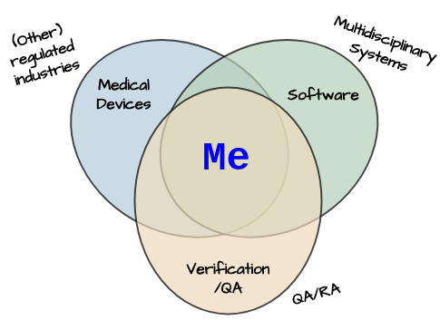

Extensive experience in Design Verification, Quality Assurance and Compliance within Product
Development,
with a strong focus on Software.
Proven success supporting MDR (CE) and FDA submissions for Medical Devices.
Skilled in cross-functional collaboration — especially across Systems Engineering, QA/RA, and
Production.
When working with developers, my lifelong passion for scripting and coding* gives me a collaborative edge.